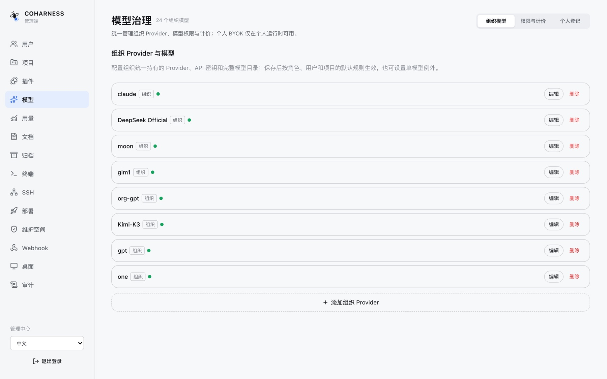
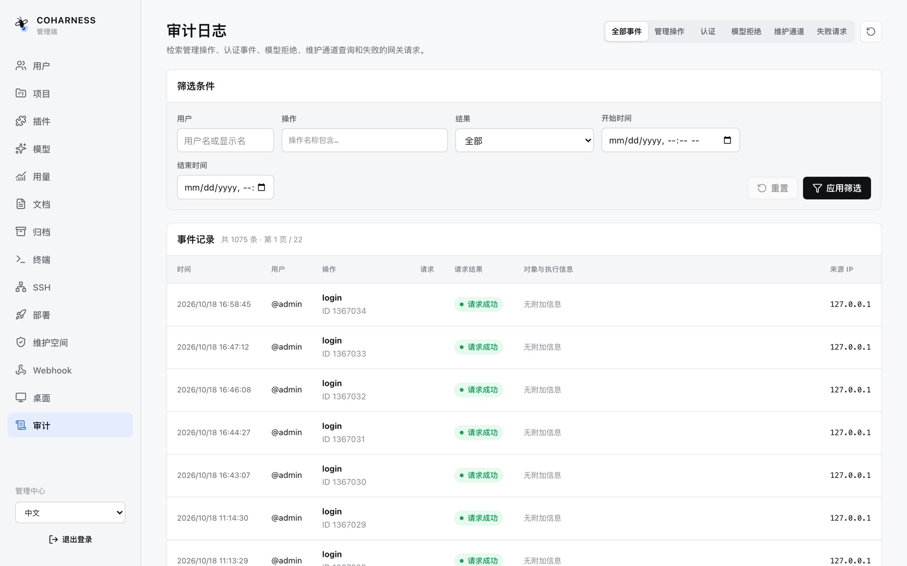
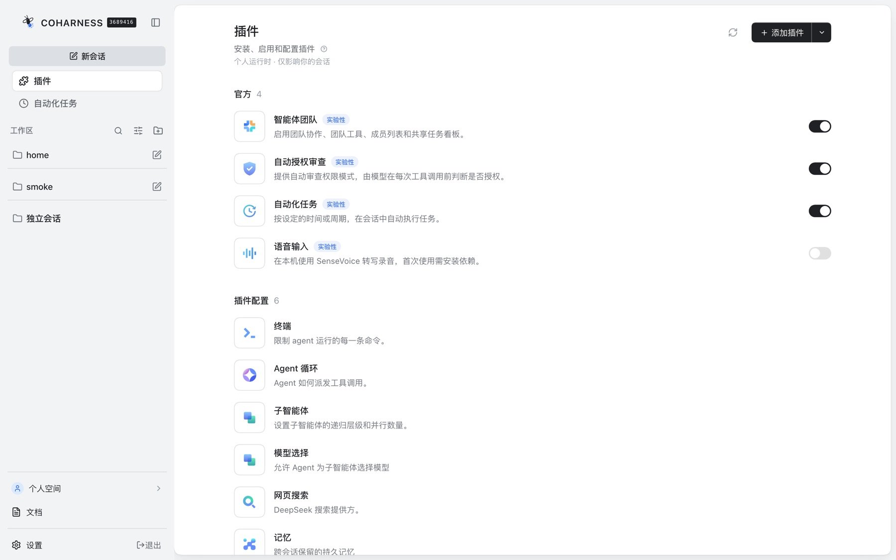

预发布 · 基于 DeepSeek Harness 的独立衍生项目
把 AI 团队，管成一个团队
CoHarness 是面向中小团队的全插件化协作平台：管理员在一个管理中心里管住用户、项目、模型与成本；成员在同一个工作台里与智能体共享真实的工作——持久会话、跨会话记忆、文档、审批与委派。

CoHarness 是面向中小团队的全插件化协作平台：管理员在一个管理中心里管住用户、项目、模型与成本；成员在同一个工作台里与智能体共享真实的工作——持久会话、跨会话记忆、文档、审批与委派。
Gateway 自带完整管理端：从账号与实例生命周期，到模型治理、用量成本、审计与部署——中小团队不需要再拼一套运维后台。




Gateway 管理两类实例：每位用户一个个人运行时承载个人空间，每个项目一个共享运行时承载协作——两种实例都按需拉起、空闲回收。
项目承载持续的智能体环境、成员贡献、委派关系、待决决策与可恢复的进度——浏览器关闭、单个智能体停止，工作依然在那里。
模型、工具、角色、上下文、权限、委派路径与工作流都通过插件、profile、bundle 组合，适配团队自己的工作方式。
主智能体可把部分工作委派给专家子智能体——有明确关系、范围与责任；子任务不静默继承全部能力与权限。
审批授权受控操作，提问补充业务判断；一个有效参与者认领待决项，结果写入共同历史，不产生竞争结果。
验证过的委派模式、评审步骤、上下文来源或工具策略，可固化为团队的下一个插件、技能、profile、bundle 或工作流。
以下均为当前代码库中已实现的能力。
Cordis 插件运行时 + 事件溯源会话：持久恢复/分叉、模型请求、审批、提问、计划、目标、待办、任务、工作流、压缩与遥测。
工作区文件工具、图片读取、Shell 与持久终端、LSP、网页搜索/抓取、技能、结构化附件、沙箱与目录策略。
个人 / 工作区 / 项目三级作用域：画像、指引、背景、资源四类条目随会话注入有界清单，支持搜索与修订。
模型可搜索、追踪、精读有权限的既有会话，并生成接续交接摘要——过去的工作成为可用的上下文。
命名用户文档：上传下载、附加到会话、作用域感知浏览、跨作用域复制、快照谱系与操作历史。
持久的子智能体会话、明确的委托关系、可恢复可继续的协作伙伴，报告选择性回流主任务。
定时与触发器驱动的自动化：任务计划、目标管理与后台执行，工作离开浏览器也能继续。
响应式浏览器应用：会话与实时历史、模型选择、命令与 @ 建议、附件、权限、目标、任务、设置、中英双语与主题。
MCP 客户端接入外部工具服务，Claude Code / Codex hook 桥接既有工作流，插件目录与 bundle 持续扩展能力面。
凭证引用让密钥不进日志；沙箱策略、目录授权、审批与权限预设，把"能做什么"钉在每次执行上。
Headless、JSON-RPC、ACP 自动化协议、TypeScript / Python SDK、SSH 远程执行目标、Webhook 出站集成。
语音输入转写、图片读取与结构化附件、用户文档附加到会话——输入面不只有键盘。
下面这些是我们自己部署上正在跑的真实项目形态。
选题、文案生成、素材整理到发布复盘的流水线——记忆让智能体记住品牌口径与风格约定。
客服类项目共享一个运行时：知识文档入库、会话留痕，成员和智能体在同一历史里接力。
定时任务驱动的监控巡检：异常摘要、留痕报告，Webhook 把结果送出到团队的既有系统。
插件开发、提示词组合工具、图像生成——团队的 AI 项目在同一个边界里被管理、计量与审计。
以下截图与演示均来自真实运行的 CoHarness 实例，非渲染示意。





同一套 Web 应用自适应到手机：浏览器直接访问已部署的 Gateway，另有 Android（Capacitor）壳可选。

无需 Gateway 与 PostgreSQL，浏览器工作区 + 本地会话存储。
git clone https://github.com/jsjm1986/CoHarness.git cd CoHarness && pnpm install && pnpm run build pnpm dsh --profile web
认证的项目边界：账号、个人空间、共享项目、模型治理、配额与审计。
# 见部署手册 gateway/deploy/README.md # PostgreSQL + release 目录 + launchd/systemd release-control.sh activate <release-dir>
CoHarness 是独立衍生项目，不是上游换皮版。底层插件与运行时契约以 DeepSeek Harness / Cordis 为参照，自研并维护 Gateway、协作、管理、文档、部署与 Android 能力；与上游按行为选择性同步。